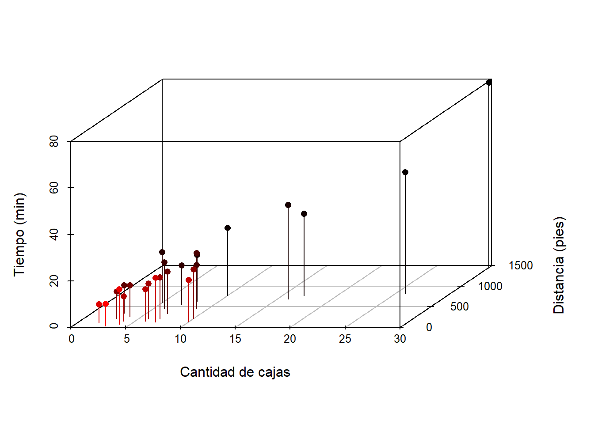

2 Regresión lineal
En este capítulo se presenta el modelo de regresión lineal clásico.
2.1 Modelo estadístico
El modelo estadístico en regresión lineal clásico permite modelar la media de una variable \(Y\) en función de \(k\) covariables. El modelo se puede expresar como sigue.
\[\begin{align} \label{mod2} y_i &\sim N(\mu_i, \sigma^2), \\ \mu_i &= \beta_0 + \beta_1 x_{1i} + \beta_2 x_{2i} + \cdots + \beta_k x_{ki}, \\ \sigma^2 &= \text{constante} \end{align}\]
donde \(i=1, 2, \ldots, n\) es el índice que identifica las \(n\) observaciones del conjunto de entrenamiento. El vector de parámetros del modelo es \(\boldsymbol{\theta}=(\beta_0, \beta_1, \cdots, \beta_k, \sigma)^\top\).
2.2 Verosimilitud del modelo
La función de verosimilitud \(L\) para el modelo es la siguiente:
\[ L(\boldsymbol{\theta}) = \prod_i^n f(y_i \vert \beta_0, \beta_1, \cdots, \beta_k, \sigma), \]
donde \(f\) corresponde a la función de densidad de la normal.
Para estimar el vector de parámetros \(\boldsymbol{\theta}\) del modelo se usa el método de Máxima Verosimilitud sobre la función \(L\) o sobre la función de log-verosimilitud siguiente:
\[ l(\boldsymbol{\theta}) = \sum_i^n \log(f(y_i \vert \beta_0, \beta_1, \cdots, \beta_k, \sigma)), \]
Ejemplo
Como ilustración vamos a usar los datos del ejemplo 3.1 del libro de Montgomery, Peck and Vining (2003). En el ejemplo 3.1 los autores ajustaron un modelo de regresión lineal múltiple para explicar el Tiempo necesario para que un trabajador haga el mantenimiento y surta una máquina dispensadora de refrescos en función de las variables Número de Cajas y Distancia.
Los datos del ejemplo están disponibles en el paquete MPV (por los apellidos de los autores). A continuación el código para cargar los datos y una muestra de las 6 primeras observaciones de la base de datos, en total se disponen de 20 observaciones.
## tiempo cantidad distancia
## 1 16.68 7 560
## 2 11.50 3 220
## 3 12.03 3 340
## 4 14.88 4 80
## 5 13.75 6 150
## 6 18.11 7 330Un gráfico en 3d es obligratorio para explorar la relación entre las variables, este diagrama de puede obtener usando el paquete scatterplot3d. A continuación el código para construirlo.
library(scatterplot3d)
attach(softdrink)
scatterplot3d(x=cantidad, y=distancia, z=tiempo, pch=16, cex.lab=1,
highlight.3d=TRUE, type="h", xlab='Cantidad de cajas',
ylab='Distancia (pies)', zlab='Tiempo (min)')
De la figura anterior se ve claramente que a medida que aumenta el número de cajas y la distancia los tiempos tienden a ser mayores.
A continuación se define la función de menos log-verosimilitud para el modelo anterior. A pesar de que nos interesa maximizar la función de log-verosimilitud hemos creado su negativo, esto porque la mayoría de las funciones de optimización minimizan y no maximizan; maximizar \(f(x)\) es equivalente a minimizar \(-f(x)\).
minusll <- function(theta, y, x1, x2) {
media <- theta[1] + theta[2] * x1 + theta[3] * x2 # Se define la media
desvi <- theta[4] # Se define la desviación.
- sum(dnorm(x=y, mean=media, sd=desvi, log=TRUE))
}Ahora vamos a usar la función optim para encontrar los valores que maximizan la función de log-verosimilitud, el código para hacer eso se muestra a continuación. En el parámetro par se coloca un vector de posibles valores de \(\boldsymbol{\Theta}\) para iniciar la búsqueda, en fn se coloca la función de interés, en lower y upper se colocan vectores que indican los límites de búsqueda de cada parámetro, los \(\beta_k\) pueden variar entre \(-\infty\) y \(\infty\) mientras que el parámetro \(\sigma\) toma valores en el intervalo \((0, \infty)\). Como la función minusll tiene argumentos adicionales y, x1 y x2, estos pasan a la función optim al final como se muestra en el código.
mod1 <- optim(par=c(0, 0, 0, 1), fn=minusll,
method='L-BFGS-B',
lower=c(-Inf, -Inf, -Inf, 0),
upper=c(Inf, Inf, Inf, Inf),
y=softdrink$tiempo,
x1=softdrink$cantidad,
x2=softdrink$distancia)En el objeto res1 está el resultado de la optimización, para explorar los resultados usamos
## $par
## [1] 2.34103295 1.61590757 0.01438512 3.05769678
##
## $value
## [1] 63.41469
##
## $counts
## function gradient
## 58 58
##
## $convergence
## [1] 0
##
## $message
## [1] "CONVERGENCE: REL_REDUCTION_OF_F <= FACTR*EPSMCH"De esta forma el vector de parámetros estimados del modelo es \(\hat{\boldsymbol{\theta}}=(2.34, 1.62, 0.01, 3.06)^\top\).
Usualmente en la práctica se usa la función lm para estimar el vector de parámetros, a continuación el código necesario para usar la funcion lm.
##
## Call:
## lm(formula = tiempo ~ cantidad + distancia, data = softdrink)
##
## Residuals:
## Min 1Q Median 3Q Max
## -5.7880 -0.6629 0.4364 1.1566 7.4197
##
## Coefficients:
## Estimate Std. Error t value Pr(>|t|)
## (Intercept) 2.341231 1.096730 2.135 0.044170 *
## cantidad 1.615907 0.170735 9.464 3.25e-09 ***
## distancia 0.014385 0.003613 3.981 0.000631 ***
## ---
## Signif. codes: 0 '***' 0.001 '**' 0.01 '*' 0.05 '.' 0.1 ' ' 1
##
## Residual standard error: 3.259 on 22 degrees of freedom
## Multiple R-squared: 0.9596, Adjusted R-squared: 0.9559
## F-statistic: 261.2 on 2 and 22 DF, p-value: 4.687e-16De la salida anterior vemos que el vector de parámetros estimados del modelo es \(\hat{\boldsymbol{\theta}}=(2.34, 1.62, 0.01, 3.26)^\top\).